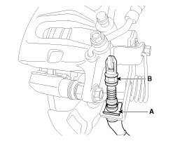
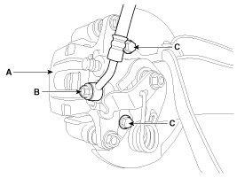
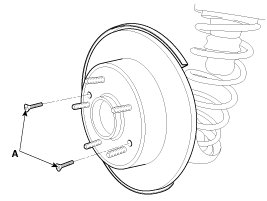
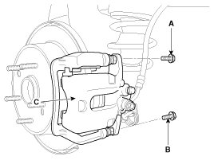
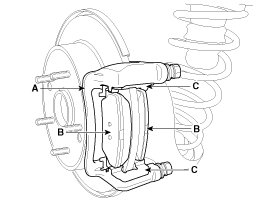
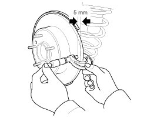
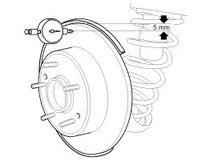
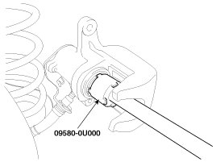
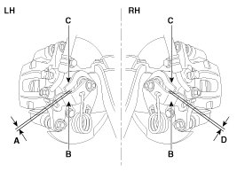

Repair Procedures
Removal
1. Remove the rear wheel & tire.
Tightening torque:
88.3 - 107.9 N.m (9.0 - 11.0 kgf.m, 65.1 - 79.6 lb-ft)
2. Release the parking brake lever and parking brake cable is loose.
3. Remove the parking brake cable (B), after removing the clip (A).

NOTE:
Parking brake lever in the car must be in fully loosened position.
4. Remove the hose eyebolt (B).
Tightening torque:
Brake hose to caliper:
24.5 - 29.4 N.m (2.5 - 3.0 kgf.m, 18.1 - 21.7 lb-ft)

5. Loosen the caliper mounting bolts (C), then remove the rear caliper assembly (A).
Tightening torque:
Caliper assembly to carrier (C) :
63.7 - 73.5 N.m (6.5 - 7.5 kgf.m, 47.0 - 54.2 lb-ft)
6. Remove the rear brake disc by loosening the screws (A).
Tightening torque:
4.9 - 5.9 N.m (0.5 - 0.6 kgf.m, 3.6 - 4.3 lb-ft)

Replacement
Rear Brake Pads
1. Loosen the guide rod bolt (A, B) and then remove the rear caliper body (C).
Tightening torque:
21.6 - 31.4 N.m (2.2 - 3.2 kgf.m, 15.9 - 23.1 lb-ft)

NOTE:
- Where necessary prevent the guide rods from rotating with an appropriate wrench.
- Be careful not to damage the dust covers.
2. Replace pad retainers (C) and brake pads (B) in the caliper carrier (A).

NOTE:
- Clean the pad retainer surface at the caliper bracket.
- Inspect the piston boots for damage and replace if necessary.
- Check the smooth action of the guide rods, and their dust covers for damage.
Inspection
Rear Brake Disc Thickness Check
1. Check the brake pads for wear and fade.
2. Check the brake disc for damage and cracks.
3. Remove all rust and contamination from the surface, and measure the disc thickness at 8 points, at least, of same distance (5mm) from the brake disc outer circle.
Brake disc thickness
Standard: 10 mm (0.394 in)
Service limit: 8.4 mm (0.331 in)
Deviation: less than 0.005 mm (0.0002 in)

4. If wear exceeds the limit, replace the discs and pad assembly left and right of the vehicle.
Rear Brake Pad Check
1. Check the pad wear. Measure the pad thickness and replace it, if it is less than the specified value.
Pad thickness
Standard value: 10 mm (0.394 in)
Service limit: 2.0 mm (0.0787 in)
2. Check the damage of pad, backing metal and contamination with grease.
Rear Brake Disc Runout Check
1. Place a dial gauge about 5mm (0.2 in.) from the outer circumference of the brake disc, and measure the runout of the disc.
Brake disc runout
Limit: 0.04 mm (0.0016 in.) or less (new one)

2. If the runout of the brake disc exceeds the limit specification, replace the disc, and then measure the runout again.
3. If the runout exceeds the limit specification, install the brake disc after turning it 180° and then check the runout of the brake disc again.
4. If the runout cannot be corrected by changing the position of the brake disc, replace the brake disc.
Installation
1. Installation is the reverse of removal.
2. Use a SST (09580-0U000) when installing the brake caliper assembly.

NOTE:
- Wind the piston into the caliper body until it is fully retracted.
- Do not use any power assisted tools for this task.
- Manually insert new screws from the brake pad and tighten the leading-pin bolt(A) first with specified torque, following this tighten the trailing-pin bolt(B) in the same manner.
3. After installation, bleed the brake system.
NOTE:
- Bring the brake pads in their operating position by pressing the brake pedal down (half of normal pedal travel) several times until there is resistance.
- In order to bed the brake pads to the brake disc and ensure performance and endurance, the vehicle user must be instructed to avoid heavy braking or sustained periods with the brakes applied, for the first 200km(124mile) after installing new pads.
- Re-setting of the parking brake is necessary after overhauling the caliper body, or if the brake calipers, caliper body, parking brake cable or brake discs have been changed.
Parking Brake Adjustment
NOTE:
- Re-setting of the parking brake is necessary after overhauling the caliper body, or if the brake calipers, housing, parking brake cable or brake discs have been changed.
1. Remove the floor console to reach the adjusting nut.
2. Loosen the parking brake cable until both operating levers rest in fully off position.
3. Bring the brake pads in their operating position by pressing the brake pedal down several times until there is resistance.
4. Tension the parking brake cable by tightening the adjusting nut, until the operating levers on both calipers lift from the stop, up to a distance of (A) and (D) between operating lever (B) and stopper (C).
Distance (A+D):Max. 3 mm (0.12 in)

5. Refit the floor console.
6. Parking brake lever in the car must be in fully loosened position.
7. If the handbrake cables where changed, actuate the parking brake a few times with maximum force to stretch the parking brake cables, and then control adjusting as above.
8. Check the wheels of their free operation.
9. Test drive.